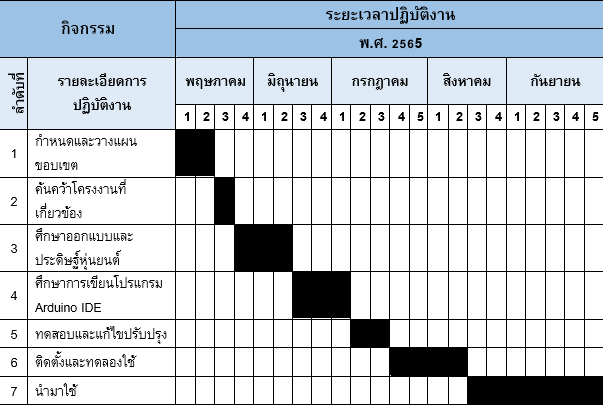

ที่มาและความสำคัญ
ในอดีตมนุษย์ใช้ชีวิตแตกต่างจากปัจจุบัน ไม่มีสิ่งอำนวยความสะดวกและเทคโนโลยีที่ก้าวไกลเหมือนปัจจุบัน ซึ่งในอดีตนั้นยังไม่มีระบบอินเทอร์เน็ต และมนุษย์ยังไม่รู้จักหุ่นยนต์ หรือเทคโนโลยี จึงไม่ค่อยมีความสะดวกสบายเหมือนการดำเนินชีวิตในปัจจุบัน โดยรวมไปถึงโรคภัยไข้เจ็บหรือภัยที่มาจากสิ่งที่อยู่รอบๆ ตัว
ปัจจุบันเทคโนโลยีได้เข้ามามีบทบาทถือว่าเป็นส่วนหนึ่งในการดำรงชีวิตประจำวันของมนุษย์ กล่าวคือ มนุษย์ได้สร้างหุ่นยนต์ หรือสิ่งอำนวยความสะดวก (เทคโนโลยี AI) ขึ้นมาเพื่ออำนวยความสะดวกสบายให้กับมนุษย์ และมนุษย์ได้เอาหุ่นยนต์เข้ามามีส่วนร่วมในการช่วยเหลือหรือทดแทนการทำงานของมนุษย์ ซึ่งในสถานการณ์ปัจจุบันนี้ได้เกิดสถานการณ์การระบาดของโรคติดเชื้อไวรัสโคโรนาสายพันธุ์ใหม่ 2019 (COVID-19) ซึ่งเป็นเชื้อไวรัสโคโรนาสายพันธุ์ใหม่ที่ถูกค้นพบครั้งแรกจากการระบาด ในเมืองอู่ฮั่น ประเทศจีน การแพร่ระบาดของไวรัสจากคนสู่คนนั้นโดยปกติแตกต่างกันตามชนิดของไวรัส ไวรัสบางชนิดสามารถติดต่อกันได้ง่าย แม้ว่าปัจจุบันไวรัสโคโรนา 2019 (COVID-19) ที่ทางกระทรวงสาธารณสุขออกประกาศ เมื่อวันที่ 1 ตุลาคม 2565 ให้ยกเลิกไวรัสโคโรนา 2019 (COVID-19) จากการเป็นโรคติดต่ออันตราย และกำหนดให้เป็นโรคติดต่อที่ต้องเฝ้าระวัง ก็ตาม แต่ในปัจจุบันเชื้อโคโรนา 2019 (COVID-19) ก็ยังแพร่ระบาดในวงกว้างและยังเป็นโรคที่ส่งผลกระทบต่อการศึกษาในโรงเรียน
ดังนั้นคณะผู้จัดทำโครงงานจึงพยายามคิดหานวัตกรรมที่ช่วยจัดการ การระบาดของโรคติดเชื้อไวรัสโคโรนา 2019 (COVID-19) ในโรงเรียน เช่น ห้องเรียน ห้องปฏิบัติการคอมพิวเตอร์ ห้องปฏิบัติการวิทยาศาสตร์ ทางคณะผู้จัดทำโครงงานจึงได้สร้างหุ่นยนต์และเขียนโค้ดซอฟต์แวร์ เพื่อควบคุมการทำงานของหุ่นยนต์ที่ชื่อว่า หุ่นยนต์ฆ่าเชื้อไวรัส เวอร์ชั่น 1 (Virus Killing Robot Ver.1) เพื่อลดปริมาณการแพร่เชื้อไวรัสโคโรนา 2019 (COVID-19) อีกด้วย
วัตถุประสงค์
1 เพื่อพัฒนาระบบควบคุมหุ่นยนต์ฆ่าเชื้อไวรัส เวอร์ชั่น 1 (Virus Killing Robot Ver.1)
2 เพื่อประเมินคุณภาพของระบบควบคุมหุ่นยนต์ฆ่าเชื้อไวรัส เวอร์ชั่น 1 (Virus Killing Robot Ver.1)
ขอบเขตการศึกษา
1 ขอบเขตด้านเนื้อหา
1.1 ข้อมูลเกี่ยวกับอุปกรณ์เชื่อมต่อ Arduino IDE
1.2 ข้อมูลเกี่ยวกับไมโครคอนโทรลเลอร์ Microcontroller
2 ขอบเขตของโปรแกรมที่ศึกษา
2.1 โปรแกรม Arduino IDE
ระยะเวลาที่ใช้ดำเนินโครงงาน
นิยามศัพท์ที่ใช้ในโครงการ
1. ไมโครคอนโทรลเลอร์ (Microcontroller) หมายถึง อุปกรณ์ควบคุมขนาดเล็ก ซึ่งบรรจุความสามารถที่คล้ายคลึงกับระบบคอมพิวเตอร์ โดยในไมโครคอนโทรลเลอร์ได้รวมเอาซีพียู, หน่วยความจำ และพอร์ต ซึ่งเป็นส่วนประกอบหลักสำคัญของระบบคอมพิวเตอร์เข้าไว้ด้วยกัน โดยทำการบรรจุเข้าไว้ในตัวถังเดียวกัน
2. ไวรัสโคโรนาสายพันธุ์ใหม่ 2019 (2019-nCoV) หมายถึง ไวรัสโคโรนาสายพันธุ์ใหม่ซึ่งถูกค้นพบครั้งแรกจากการระบาดในเมืองอู่ฮั่น ประเทศจีน การแพร่ระบาดของไวรัสจากคนสู่คนนั้นโดยปกติแตกต่างกันตามชนิดของไวรัส ไวรัสบางชนิดสามารถติดต่อกันได้ง่าย ในขณะที่บางชนิดติดต่อกันได้ยาก
ประโยชน์ที่คาดว่าจะได้รับ
1. ได้ระบบควบคุมหุ่นยนต์ฆ่าเชื้อไวรัส เวอร์ชั่น 1 (Virus Killing Robot Ver.1)
2. ได้ระบบควบคุมหุ่นยนต์ฆ่าเชื้อไวรัส เวอร์ชั่น 1 (Virus Killing Robot Ver.1) ที่มีคุณภาพสามารถนำไปใช้งานได้จริง